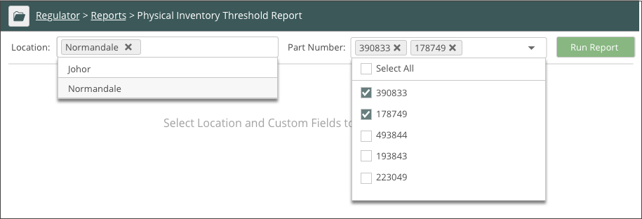
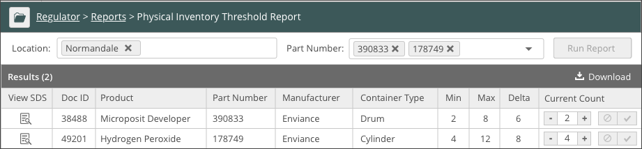

Facilities that track minimum and maximum threshold values by physical container inventory can run a Physical Inventory Threshold report. The report automatically aggregates containers and compares them to the minimum or maximum inventory values stored. This allows users to quickly add or subtract the container inventory to meet the minimum or maximum values.
To run the Physical Inventory Threshold Report:
Click Regulator Main Menu (). The Regulator navigation pane displays. Select Physical Inventory Threshold Report from the Reports list.
Select location and custom fields. You can choose as many custom fields as needed. In the example below the custom field name is Part Number.

Click Run Report.
The report displays. Click Download to download the report in Excel format. Click the document icon to download the SDS.

MIn: Minimum number of containers allowed in the specific location.
Max: Maximum number of containers allowed in the specific location.
Delta: The difference between Max and Min numbers.
Current Count: Current number of containers in the location.
You can increase or decrease your product inventory number by using "+" and "-" in the Current Count column.
 ). The Regulator navigation pane displays. Select Physical Inventory Threshold Report from the Reports list.
). The Regulator navigation pane displays. Select Physical Inventory Threshold Report from the Reports list.